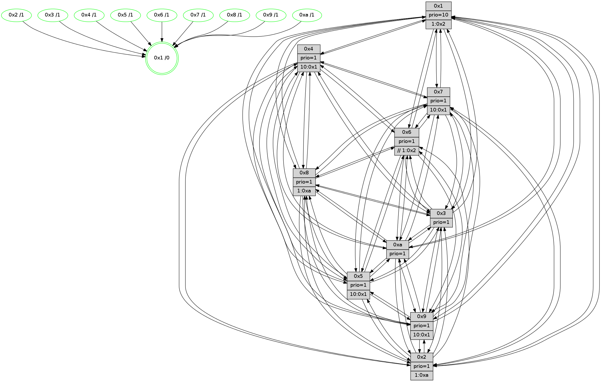

>> << IDX [start] -100 -25 -5 +0 +5 +25 +100 [1325.27675605]
 Previous packets
----------------------------------------------------------------------
1320.547972 beacon01(faad) #0 coord=01,02,03,04,05,06,07,0a,09,08 cycle=688.0ms assoc
-- color-indic=1 64 44 16
1320.557956 beacon02(faad) #0 coord=01,02,03,04,05,06,07,0a,09,08 cycle=688.0ms assoc 64 d7 27
1320.567954 beacon03(faad) #0 coord=01,02,03,04,05,06,07,0a,09,08 cycle=688.0ms assoc 64 ad 6a
1320.577955 beacon04(faad) #0 coord=01,02,03,04,05,06,07,0a,09,08 cycle=688.0ms assoc 64 da 80
1320.587954 beacon05(faad) #0 coord=01,02,03,04,05,06,07,0a,09,08 cycle=688.0ms assoc 64 a0 cd
1320.597955 beacon06(faad) #0 coord=01,02,03,04,05,06,07,0a,09,08 cycle=688.0ms assoc 64 2e 1a
1320.607956 beacon07(faad) #0 coord=01,02,03,04,05,06,07,0a,09,08 cycle=688.0ms assoc 64 54 57
1320.617959 beacon0a(faad) #0 coord=01,02,03,04,05,06,07,0a,09,08 cycle=688.0ms assoc 64 25 5c
1320.637961 beacon08(faad) #0 coord=01,02,03,04,05,06,07,0a,09,08 cycle=688.0ms assoc 64 d1 c6
1320.649811 [Hello(9): seq=786 sym=2,5,3,4,7,6,8,10,1 sysInfo=hasWarning stat=2:1,12,10,10/5:4,6,12,7/3:2,0,2,3/4:14,3,14,1/7:1,9,0,3/6:1,3,8,13/8:14,9,13,4/10:15,0,0,4/1:2,4,9,1]
1320.652938 [Hello(7): seq=842 sym=2,3,5,6,4,8,9,10,1 sysInfo=hasWarning stat=2:13,10,13,3/3:6,0,14,3/5:2,12,5,2/6:11,8,11,11/4:3,6,2,0/8:11,12,7,0/9:1,10,5,1/10:13,4,9,6/1:14,13,5,0]
1320.655547 [Color(1) seq=522 @0:0 prio=10 >1.@2,1.@3,1.@4,1.@5]
1320.657281 [Color(5) seq=405 @0:0 prio=1 >10.@1,1.@6,1.@7,1.@8]
1320.659417 [Hello(8): seq=786 sym=5,2,3,7,9,6,4,10,1 sysInfo=hasWarning stat=5:14,9,0,0/2:8,0,4,12/3:2,4,8,3/7:0,1,0,0/9:6,1,2,4/6:4,2,5,15/4:2,5,2,0/10:10,10,6,4/1:10,7,8,0]
1320.661987 [Color(7) seq=370 @0:0 prio=1 >10.@1,1.@5,1.@6,1.@8]
1320.663834 [Color(8) seq=441 @0:0 prio=1 >1.@a]
1320.666217 [Hello(4): seq=842 sym=5,7,6,2,3,9,8,10,1 sysInfo= stat=5:12,9,14,1/7:10,2,2,1/6:10,13,4,14/2:0,6,14,0/3:8,8,7,14/9:11,14,7,1/8:12,10,9,1/10:9,1,11,14/1:5,4,8,1]
1320.669344 [Color(4) seq=381 @0:0 prio=1 >10.@1,1.@2,1.@3,1.@5]
1320.673088 [Hello(10): seq=775 sym=6,2,3,8,7,5,9,4,1 sysInfo=hasWarning stat=6:14,1,10,3/2:12,10,12,11/3:3,11,15,14/8:11,8,9,2/7:14,12,4,8/5:4,3,9,0/9:3,3,1,4/4:7,7,4,1/1:11,15,1,1]
----------------------------------------------------------------------
1321.336102 beacon01(faad) #0 coord=01,02,03,04,05,06,07,0a,09,08 cycle=688.0ms assoc
-- color-indic=1 64 80 18
1321.346084 beacon02(faad) #0 coord=01,02,03,04,05,06,07,0a,09,08 cycle=688.0ms assoc 64 13 29
1321.356084 beacon03(faad) #0 coord=01,02,03,04,05,06,07,0a,09,08 cycle=688.0ms assoc 64 69 64
1321.366085 beacon04(faad) #0 coord=01,02,03,04,05,06,07,0a,09,08 cycle=688.0ms assoc 64 1e 8e
1321.376086 beacon05(faad) #0 coord=01,02,03,04,05,06,07,0a,09,08 cycle=688.0ms assoc 64 64 c3
1321.386085 beacon06(faad) #0 coord=01,02,03,04,05,06,07,0a,09,08 cycle=688.0ms assoc 64 ea 14
1321.396088 beacon07(faad) #0 coord=01,02,03,04,05,06,07,0a,09,08 cycle=688.0ms assoc 64 90 59
1321.406090 beacon0a(faad) #0 coord=01,02,03,04,05,06,07,0a,09,08 cycle=688.0ms assoc 64 e1 52
1321.426090 beacon08(faad) #0 coord=01,02,03,04,05,06,07,0a,09,08 cycle=688.0ms assoc 64 15 c8
1321.437947 [Hello(5): seq=843 sym=7,6,4,3,1,9,8,10,2 sysInfo=hasWarning stat=7:1,13,5,15/6:5,5,4,4/4:3,3,12,14/3:10,15,2,1/1:1,2,4,0/9:13,13,9,10/8:2,14,10,3/10:3,0,8,8/2:7,8,2,7]
1321.441444 [Hello(6): seq=843 sym=3,5,4,7,9,8,10,1 sysInfo=hasWarning stat=3:1,9,6,1/5:7,10,14,3/4:7,5,0,7/7:6,2,10,14/9:5,12,8,10/8:6,9,3,5/10:2,5,13,12/1:3,7,7,1]
1321.444010 PARSE ERROR************************
Traceback (most recent call last):
File "PacketAnalysis.py", line 167, in showOperaPacket
structPacket = OperaPacketParse.parsePacket(rawPacket)
File "../../pkg-python/HipSens/Core/OperaPacketParse.py", line 461, in parsePacket
return parseHelloMessage(data)
File "../../pkg-python/HipSens/Core/OperaPacketParse.py", line 127, in parseHelloMessage
assert struct.calcsize("H")*len(neighAddrList) == len(linkList)
AssertionError
48 34 02 00 03 47 00 02 02 12 04 00 05 00 07 00 06 00 03 00 09 00 08 00 0a 00 01 00 53 04 00 02 00 00 4c 12 cc 3b 27 ff 0c 08 01 c7 c6 9f 92 a8 b8 26 aa 3d 04 76 4c 01
1321.446846 [Hello(1): seq=752 sym=4,2,9,5,10,3,8,6,7 sysInfo=coloring-mode-on,ColoringModeRequestCalled stat=4:12,13,13,2/2:2,1,7,5/9:6,14,12,1/5:14,15,13,8/10:15,10,9,7/3:1,10,7,10/8:8,6,9,1/6:8,8,7,0/7:6,7,0,0]
1321.449509 [Color(9) seq=402 @0:0 prio=1 >10.@1,1.@5,1.@a]
1321.451105 [Color(2) seq=419 @0:0 prio=1 >1.@a]
1321.452757 [Hello(3): seq=843 sym=1,7,6,2,4,8,9,10,5 sysInfo=hasWarning stat=1:6,13,9,0/7:4,1,0,13/6:10,15,4,0/2:1,7,13,2/4:13,11,3,12/8:13,0,11,4/9:1,9,4,0/10:9,4,5,4/5:1,7,5,0]
1321.455572 [Color(3) seq=472 @0:0 prio=1]
1321.457255 [Color(10) seq=432 @0:0 prio=1]
1321.462289 [Color(6) seq=475 @0:0 prio=1 >>1.@2,1.@3,1.@4]
1321.465933 [STC(1) #0.220 tree-change,inconsistent-stability,stable,to-color d=0]
----------------------------------------------------------------------
1322.124234 beacon01(faad) #0 coord=01,02,03,04,05,06,07,0a,09,08 cycle=688.0ms assoc
-- color-indic=1 64 3c 1d
1322.134215 beacon02(faad) #0 coord=01,02,03,04,05,06,07,0a,09,08 cycle=688.0ms assoc 64 af 2c
1322.144217 beacon03(faad) #0 coord=01,02,03,04,05,06,07,0a,09,08 cycle=688.0ms assoc 64 d5 61
1322.154216 beacon04(faad) #0 coord=01,02,03,04,05,06,07,0a,09,08 cycle=688.0ms assoc 64 a2 8b
1322.164217 beacon05(faad) #0 coord=01,02,03,04,05,06,07,0a,09,08 cycle=688.0ms assoc 64 d8 c6
1322.174217 beacon06(faad) #0 coord=01,02,03,04,05,06,07,0a,09,08 cycle=688.0ms assoc 64 56 11
1322.184219 beacon07(faad) #0 coord=01,02,03,04,05,06,07,0a,09,08 cycle=688.0ms assoc 64 2c 5c
1322.194221 beacon0a(faad) #0 coord=01,02,03,04,05,06,07,0a,09,08 cycle=688.0ms assoc 64 5d 57
1322.214223 beacon08(faad) #0 coord=01,02,03,04,05,06,07,0a,09,08 cycle=688.0ms assoc 64 a9 cd
1322.225844 [STC(2)->1 #0.220 tree-change,inconsistent-stability,stable,to-color d=1]
1322.227118 [STC(6)->1 #0.220 tree-change,inconsistent-stability,stable,to-color d=1]
1322.229056 [STC(5)->1 #0.220 tree-change,inconsistent-stability,stable,to-color d=1]
1322.230515 [Hello(7): seq=843 sym=2,3,5,6,4,8,9,10,1 sysInfo=hasWarning stat=2:14,11,13,3/3:7,1,14,3/5:3,12,5,2/6:12,9,11,11/4:4,7,2,0/8:11,13,7,0/9:2,11,5,1/10:14,5,9,6/1:15,13,6,0]
1322.233962 [Hello(9): seq=787 sym=2,5,3,4,7,6,8,10,1 sysInfo=hasWarning stat=2:1,13,10,10/5:5,7,12,7/3:3,1,2,3/4:15,4,14,1/7:2,10,0,3/6:1,4,8,13/8:15,10,13,4/10:0,1,0,4/1:2,5,10,1]
1322.236408 [Hello(8): seq=787 sym=5,2,3,7,9,6,4,10,1 sysInfo=hasWarning stat=5:15,9,0,0/2:9,1,4,12/3:3,5,8,3/7:0,1,0,0/9:7,2,2,4/6:5,3,5,15/4:3,6,2,0/10:11,11,6,4/1:11,7,9,0]
1322.239929 [Color(5) seq=406 @0:0 prio=1 >10.@1,1.@6,1.@7,1.@8]
1322.242105 [Hello(4): seq=843 sym=5,7,6,2,3,9,8,10,1 sysInfo= stat=5:13,9,14,1/7:10,2,2,1/6:11,14,4,14/2:1,7,14,0/3:9,9,7,14/9:12,15,7,1/8:12,10,9,1/10:10,2,11,14/1:6,4,9,1]
1322.244603 [STC(8)->1 #0.220 tree-change,inconsistent-stability,stable,to-color d=1]
1322.246576 [Color(1) seq=523 @0:0 prio=10 >1.@2,1.@3,1.@4,1.@5]
1322.248239 [STC(4)->1 #0.220 tree-change,inconsistent-stability,stable,to-color d=1]
1322.250576 [Hello(10): seq=776 sym=6,3,8,7,5,9,4,1 sysInfo=hasWarning stat=6:14,2,10,3/3:3,11,15,14/8:11,8,9,2/7:14,12,4,8/5:5,3,9,0/9:3,3,1,4/4:7,7,4,1/1:11,15,2,1]
1322.253609 [STC(10)->1 #0.220 tree-change,inconsistent-stability,stable,to-color d=1]
1322.257746 [STC(7)->1 #0.220 tree-change,inconsistent-stability,stable,to-color d=1]
1322.259749 [Color(4) seq=382 @0:0 prio=1 >10.@1,1.@2,1.@3,1.@5]
1322.261867 [Color(8) seq=442 @0:0 prio=1 >1.@a]
1322.264814 [STC(9)->1 #0.220 tree-change,inconsistent-stability,stable,to-color d=1]
1322.268916 [TreeStatus(7)-.->1 #0.220 tree-change,inconsistent-stability,stable child=1]
1322.272046 [Color(7) seq=371 @0:0 prio=1 >10.@1,1.@5,1.@6,1.@8]
----------------------------------------------------------------------
1322.912367 beacon01(faad) #0 coord=01,02,03,04,05,06,07,0a,09,08 cycle=688.0ms assoc
-- color-indic=1 64 9b 6d
1322.922348 beacon02(faad) #0 coord=01,02,03,04,05,06,07,0a,09,08 cycle=688.0ms assoc 64 08 5c
1322.932350 beacon03(faad) #0 coord=01,02,03,04,05,06,07,0a,09,08 cycle=688.0ms assoc 64 72 11
1322.942351 beacon04(faad) #0 coord=01,02,03,04,05,06,07,0a,09,08 cycle=688.0ms assoc 64 05 fb
1322.952350 beacon05(faad) #0 coord=01,02,03,04,05,06,07,0a,09,08 cycle=688.0ms assoc 64 7f b6
1322.962350 beacon06(faad) #0 coord=01,02,03,04,05,06,07,0a,09,08 cycle=688.0ms assoc 64 f1 61
1322.972350 beacon07(faad) #0 coord=01,02,03,04,05,06,07,0a,09,08 cycle=688.0ms assoc 64 8b 2c
1322.982355 beacon0a(faad) #0 coord=01,02,03,04,05,06,07,0a,09,08 cycle=688.0ms assoc 64 fa 27
1323.002355 beacon08(faad) #0 coord=01,02,03,04,05,06,07,0a,09,08 cycle=688.0ms assoc 64 0e bd
1323.013939 [Hello(1): seq=753 sym=4,2,9,5,10,3,8,6,7 sysInfo=coloring-mode-on,ColoringModeRequestCalled stat=4:12,14,14,2/2:2,1,8,5/9:6,14,13,1/5:14,15,13,8/10:15,10,10,7/3:1,10,8,10/8:8,7,9,1/6:8,8,8,0/7:6,8,1,1]
1323.017193 [Color(9) seq=403 @0:0 prio=1 >10.@1,1.@5,1.@a]
1323.019355 [Color(10) seq=433 @0:0 prio=1]
1323.020873 [Hello(3): seq=844 sym=1,7,6,2,4,8,9,10,5 sysInfo=hasWarning stat=1:6,13,10,0/7:4,2,1,14/6:10,0,4,0/2:1,7,13,2/4:13,12,3,12/8:13,1,11,4/9:1,9,5,0/10:9,5,6,4/5:2,7,5,0]
1323.024326 [Color(3) seq=473 @0:0 prio=1]
1323.026135 [Hello(6): seq=844 sym=3,5,4,7,9,8,10,1 sysInfo=hasWarning stat=3:1,9,6,1/5:8,11,15,3/4:8,6,1,7/7:7,3,11,15/9:6,12,9,10/8:6,10,4,5/10:3,5,14,12/1:3,8,8,1]
1323.030199 [Hello(5): seq=844 sym=7,6,4,3,1,9,8,10,2 sysInfo=hasWarning stat=7:1,14,6,0/6:6,6,5,4/4:4,4,13,14/3:11,0,2,1/1:2,3,5,0/9:13,14,10,10/8:2,15,11,3/10:3,1,9,8/2:8,9,3,7]
1323.036442 [Color(6) seq=476 @0:0 prio=1 >>1.@2,1.@3,1.@4]
1323.040292 [Hello(2): seq=840 sym=4,5,7,6,3,9,8,10,1 sysInfo=hasWarning stat=4:12,4,13,12/5:0,0,8,2/7:9,1,13,1/6:7,13,2,0/3:0,10,6,12/9:9,10,3,9/8:6,3,9,11/10:13,4,11,10/1:6,8,5,0]
1323.043121 [Color(2) seq=420 @0:0 prio=1 >1.@a]
----------------------------------------------------------------------
1323.700497 beacon01(faad) #0 coord=01,02,03,04,05,06,07,0a,09,08 cycle=688.0ms assoc
-- color-indic=1 64 27 68
1323.710479 beacon02(faad) #0 coord=01,02,03,04,05,06,07,0a,09,08 cycle=688.0ms assoc 64 b4 59
1323.720479 beacon03(faad) #0 coord=01,02,03,04,05,06,07,0a,09,08 cycle=688.0ms assoc 64 ce 14
1323.730479 beacon04(faad) #0 coord=01,02,03,04,05,06,07,0a,09,08 cycle=688.0ms assoc 64 b9 fe
1323.740482 beacon05(faad) #0 coord=01,02,03,04,05,06,07,0a,09,08 cycle=688.0ms assoc 64 c3 b3
1323.750480 beacon06(faad) #0 coord=01,02,03,04,05,06,07,0a,09,08 cycle=688.0ms assoc 64 4d 64
1323.760480 beacon07(faad) #0 coord=01,02,03,04,05,06,07,0a,09,08 cycle=688.0ms assoc 64 37 29
1323.770485 beacon0a(faad) #0 coord=01,02,03,04,05,06,07,0a,09,08 cycle=688.0ms assoc 64 46 22
1323.790485 beacon08(faad) #0 coord=01,02,03,04,05,06,07,0a,09,08 cycle=688.0ms assoc 64 b2 b8
1323.801709 [Hello(9): seq=788 sym=2,5,3,4,7,6,8,10,1 sysInfo=hasWarning stat=2:2,14,10,10/5:6,7,12,7/3:4,2,2,3/4:15,4,14,1/7:2,11,0,4/6:2,5,8,13/8:0,10,13,4/10:0,2,0,4/1:3,5,10,1]
1323.804717 [Hello(10): seq=777 sym=6,2,3,8,7,5,9,4,1 sysInfo=hasWarning stat=6:15,3,10,3/2:0,1,0,0/3:4,12,15,14/8:11,9,9,2/7:14,13,5,9/5:6,3,9,0/9:3,3,2,4/4:7,8,4,1/1:12,15,2,1]
1323.807436 [Hello(4): seq=844 sym=5,7,6,2,3,9,8,10,1 sysInfo= stat=5:14,9,15,1/7:10,3,2,2/6:12,15,5,14/2:2,8,15,0/3:10,10,7,14/9:12,0,8,1/8:12,11,9,1/10:10,3,11,14/1:7,4,9,1]
1323.811197 [Color(4) seq=383 @0:0 prio=1 >10.@1,1.@2,1.@3,1.@5]
1323.813969 [Color(1) seq=524 @0:0 prio=10 >1.@2,1.@3,1.@4,1.@5]
1323.815910 [Color(5) seq=407 @0:0 prio=1 >10.@1,1.@6,1.@7,1.@8]
1323.819996 [Hello(7): seq=844 sym=2,3,5,6,4,8,9,10,1 sysInfo=hasWarning stat=2:15,12,14,3/3:8,2,14,3/5:4,12,6,2/6:13,10,12,11/4:4,7,2,0/8:11,13,7,0/9:2,12,5,1/10:14,6,9,6/1:0,13,6,0]
1323.822813 [Color(7) seq=372 @0:0 prio=1 >10.@1,1.@5,1.@6,1.@8]
1323.825328 [Hello(8): seq=788 sym=5,2,3,7,9,6,4,10,1 sysInfo=hasWarning stat=5:0,9,1,0/2:10,2,5,12/3:4,6,8,3/7:0,2,0,1/9:7,3,3,4/6:6,4,6,15/4:3,6,2,0/10:11,12,6,4/1:12,7,9,0]
1323.829741 [Color(8) seq=443 @0:0 prio=1 >1.@a]
----------------------------------------------------------------------
1324.488627 beacon01(faad) #0 coord=01,02,03,04,05,06,07,0a,09,08 cycle=688.0ms assoc
-- color-indic=1 64 e3 66
1324.498609 beacon02(faad) #0 coord=01,02,03,04,05,06,07,0a,09,08 cycle=688.0ms assoc 64 70 57
1324.508609 beacon03(faad) #0 coord=01,02,03,04,05,06,07,0a,09,08 cycle=688.0ms assoc 64 0a 1a
1324.518609 beacon04(faad) #0 coord=01,02,03,04,05,06,07,0a,09,08 cycle=688.0ms assoc 64 7d f0
1324.528609 beacon05(faad) #0 coord=01,02,03,04,05,06,07,0a,09,08 cycle=688.0ms assoc 64 07 bd
1324.538609 beacon06(faad) #0 coord=01,02,03,04,05,06,07,0a,09,08 cycle=688.0ms assoc 64 89 6a
1324.548611 beacon07(faad) #0 coord=01,02,03,04,05,06,07,0a,09,08 cycle=688.0ms assoc 64 f3 27
1324.558615 beacon0a(faad) #0 coord=01,02,03,04,05,06,07,0a,09,08 cycle=688.0ms assoc 64 82 2c
1324.578615 beacon08(faad) #0 coord=01,02,03,04,05,06,07,0a,09,08 cycle=688.0ms assoc 64 76 b6
1324.590474 [Hello(5): seq=845 sym=7,6,4,3,1,9,8,10,2 sysInfo=hasWarning stat=7:2,15,6,0/6:6,7,5,4/4:4,4,13,14/3:11,0,2,1/1:2,3,5,0/9:14,14,10,10/8:3,0,11,3/10:3,1,9,8/2:9,10,3,7]
1324.594009 [Color(10) seq=434 @0:0 prio=1]
1324.596729 [Hello(1): seq=754 sym=4,2,9,5,10,3,8,6,7 sysInfo=coloring-mode-on,ColoringModeRequestCalled stat=4:12,14,14,2/2:3,2,8,5/9:7,15,13,1/5:15,0,13,8/10:15,11,10,7/3:2,11,8,10/8:9,8,9,1/6:9,9,8,0/7:7,9,1,1]
1324.601193 [Color(9) seq=404 @0:0 prio=1 >10.@1,1.@5,1.@a]
1324.603032 [Hello(3): seq=845 sym=1,7,6,2,4,8,9,10,5 sysInfo=hasWarning stat=1:7,14,10,0/7:5,3,1,14/6:11,1,4,0/2:2,8,13,2/4:14,13,3,12/8:14,2,11,4/9:2,9,5,0/10:10,5,6,4/5:3,8,5,0]
1324.607138 [Color(3) seq=474 @0:0 prio=1]
1324.608947 [Color(6) seq=477 @0:0 prio=1 >>1.@2,1.@3,1.@4]
1324.616436 [Hello(2): seq=841 sym=4,5,7,6,3,9,8,10,1 sysInfo=hasWarning stat=4:13,5,13,12/5:0,1,8,2/7:10,2,13,1/6:7,13,2,0/3:0,10,6,12/9:10,11,3,9/8:7,4,9,11/10:14,4,11,10/1:7,9,5,0]
1324.619569 [Color(2) seq=421 @0:0 prio=1 >1.@a]